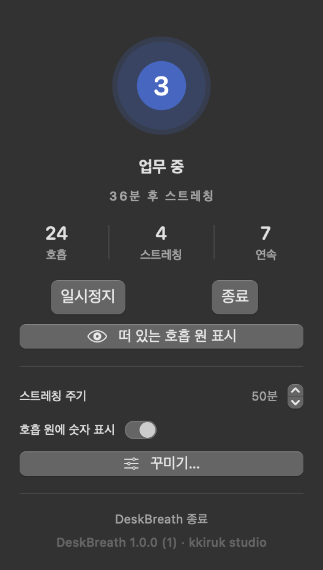
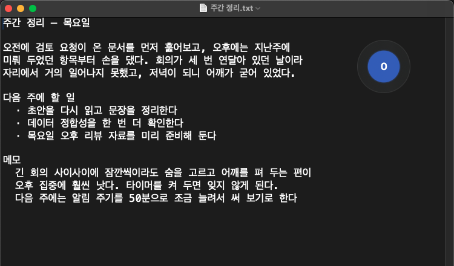
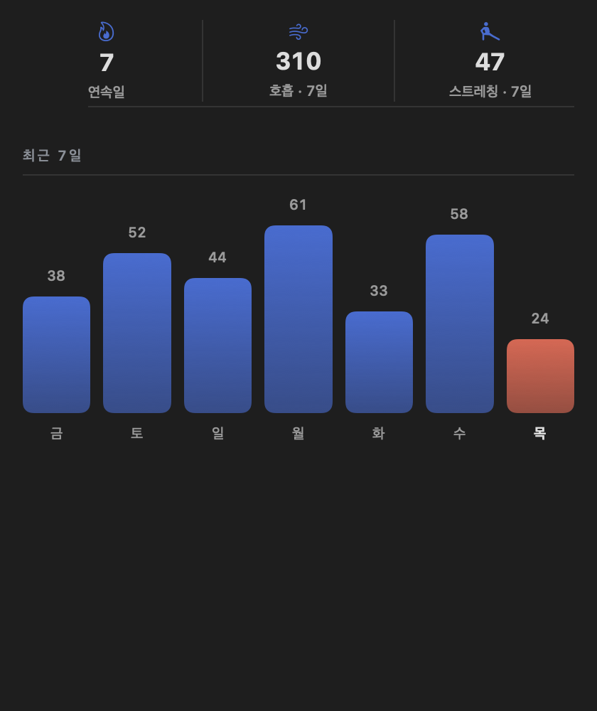

화면IOS 17+ · MACOS 14+
업무 중간에 쓰는 도구, 데모가 아니라.


화상회의와 집중 작업 사이, 호흡은 자꾸 잊혀집니다. 데스크브레스는 호흡 원을 한 번 탭하면 시작하고, 들숨·멈춤·날숨이 바뀔 때마다 확실한 햅틱으로 느껴져요.

앱을 찾아 여는 순간조차 없앴습니다 — 일하다 한 번 올려다보면 됩니다.

문서 위에 조용히 떠 있어요. 곁눈으로 리듬만 따라가면 됩니다.

오늘 몇 번 숨을 골랐는지, 스트레칭을 했는지 자리를 뜨지 않고 확인하세요.
박스호흡, 4-7-8, 혹은 나만의 들숨·날숨 초 — 계정 없이 메뉴바나 앱에서 바로 무료로 시작합니다.
들숨·멈춤·날숨이 바뀔 때마다 다른 햅틱으로 느껴져서, 화면을 보지 않아도 리듬을 유지할 수 있어요.
30·60·90·120분마다 부드러운 알림이 자리에서 일어나 어깨를 풀고 자세를 바로잡으라고 알려줍니다. 실제로 했을 때만 "했어요"를 눌러 기록에 남겨요.
거북목과 뻐근함은 알림을 몇 번 무시했는지 신경 쓰지 않습니다. 데스크브레스는 실제로 스트레칭했을 때만 "했어요"로 기록하고, 세션은 10시간 뒤 자동으로 끝나 퇴근 후엔 알림이 오지 않아요.
호흡 원을 한 번 탭해서 시작하거나 멈추고, 들숨에서 멈춤, 날숨으로 넘어갈 때마다 다른 햅틱을 느껴보세요 — 화면을 보지 않아도 됩니다.
메뉴바 아이콘과, 원하면 항상 위에 뜨는 플로팅 호흡 원까지 — 편한 방식을 골라 쓰세요.
4-4-4-4 박스호흡, 4-7-8 등 — 무료로 내장, 한 탭이면 바로 시작합니다.
들숨·멈춤·날숨을 각각 다른 햅틱으로 느껴보세요. 초도 직접 정할 수 있어요 — 무료.
호흡 원 색을 바꾸고 원하는 이미지를 넣고, 카운트 방향까지 내게 맞게 뒤집습니다.
원형·이퀄라이저·링·블룸·박스·파형·펄스 중 취향에 맞는 모양을 골라보세요.
이번 주 실제로 끝낸 세션이 몇 번인지 확인하고 스트릭을 이어가세요.
30·60·90·120분마다 알려드려요. 실제로 했을 때만 "했어요"를 눌러 기록에 남습니다.
Pro는 평생 한 번 결제입니다. 매달 빠져나가는 구독료는 없습니다.